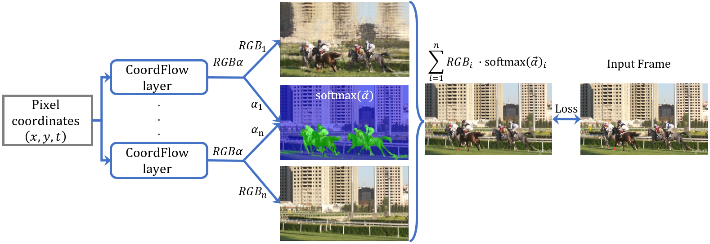
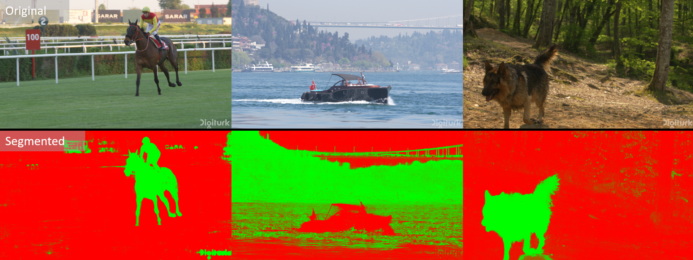
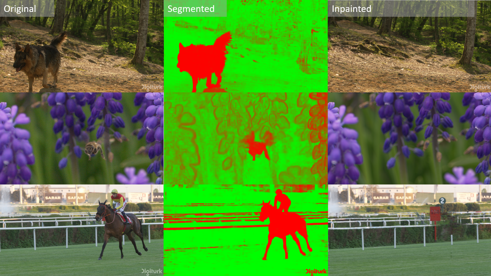
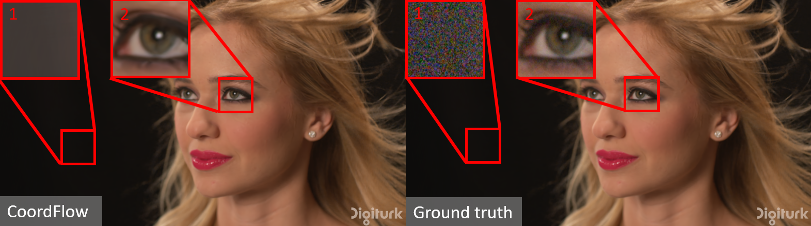

CoordFlow
Coordinate Flow for Pixel-wise Neural Video Representation
Accepted to the Data Compression Conference (DCC) 2025
Technion - Israel Institute of Technology


Abstract
In the field of video compression, the pursuit for better quality at lower bit rates remains a long-lasting goal. Recent developments have demonstrated the potential of Implicit Neural Representation (INR) as a promising alternative to traditional transform-based methodologies. Video INRs can be roughly divided into frame-wise and pixel-wise methods according to the structure the network outputs. While the pixel-based methods are better for upsampling and parallelization, frame-wise methods demonstrated better performance. We introduce CoordFlow, a novel pixel-wise INR for video compression. It yields state-of-the-art results compared to other pixel-wise INRs and on-par performance compared to leading frame-wise techniques. The method is based on the separation of the visual information into visually consistent layers, each represented by a dedicated network that compensates for the layer's motion. When integrated, a byproduct is an unsupervised segmentation of video sequence. Objects motion trajectories are implicitly utilized to compensate for visual-temporal redundancies. Additionally, the proposed method provides inherent video upsampling, stabilization, inpainting, and denoising capabilities.

CoordFlow in comparison to other methods pixel-wise methods, NeRV, and h.265
Method
CoordFlow Layer

The process initiates with the input pixel coordinates (x, y, t), where t undergoes positional encoding (PE) before being processed by the Flow Network. This network computes a similarity transformation to realign the spatial coordinates (x, y), counteracting the motion within the video sequence, and yielding a set of transformed coordinates (x′, y′, t). These stabilized coordinates, after positional encoding, are then inputted into the Color Network, which produces the color (RGB) and alpha (α) outputs for each pixel. The operation of the Flow Network effectively creates a ’canonical space’, in which the temporal motion is neutralized, allowing the Color Network to generate a consistent representation across time.
CoordFlow Net
The input coordinates are passed through the CoordFlow layers in parallel, outputting RGB and alpha values. In this example there are only two layers, and the RGB output of each layer can be seen in the middle, in addition to the softmax value of the alphas. The softmax map acts similarly to an attention map, and we can see the background/foreground segmentation. At the far right is the ground truth frame, next to the final output of the model.
Additional benefits
Unsupervised Segmentation

The CoordFlow model can be used to segment the video into different layers, each representing a different object. The model is trained in an unsupervised manner, and the layers are generated based on the motion of the objects in the video. The model can be used to segment the video into different layers, each representing a different object.
Video Stabilization
Inpainting
The CoordFlow model can be used to inpaint missing parts of the video. The model is trained to predict the color of each pixel based on the surrounding pixels, and can be used to fill in missing parts of the video.
Video Inpainting
Denoising
The CoordFlow model can be used to denoise the video. The model is trained to predict the color of each pixel based on the surrounding pixels, and can be used to remove noise from the video. The values in square 1 were multiplied by 4 in both images for better noise visualization.
Video Upasampling
CoordFlow’s continuous input space allows dynamic sampling between ground truth pixel coordinates. Thus, it is possible to upsample the video in the x, y axes for better resolution, and in the t axis for frame interpolation to achieve higher frame rate.
BibTeX
@misc{silver2024coordflow,
title={CoordFlow: Coordinate Flow for Pixel-wise Neural Video Representation},
author={Daniel Silver and Ron Kimmel},
year={2024},
eprint={2501.00975},
archivePrefix={arXiv},
primaryClass={cs.CV}
}